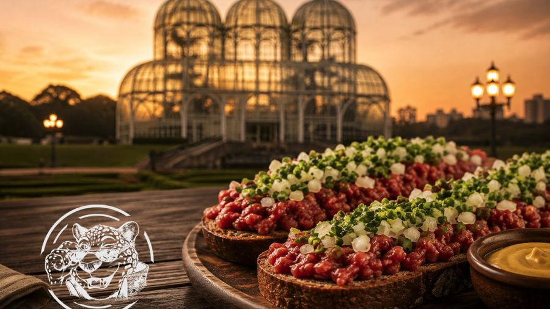

Indicação Geográfica: o que significa esse selo
O mesmo tipo de registro do queijo da Canastra, aplicado a um petisco de boteco curitibano.

A Carne de Onça tem dois reconhecimentos oficiais, e eles não são a mesma coisa.
Em 2016, foi reconhecida como Patrimônio Cultural de Natureza Imaterial de Curitiba. Esse título protege a prática: reconhece que fazer e comer carne de onça é parte da cultura da cidade, como uma festa ou um ofício tradicional.
Em 2025, veio o segundo — e é de outra natureza. A Associação dos Amigos da Onça, com apoio do Sebrae, conquistou junto ao INPI o registro de Indicação Geográfica, na modalidade Indicação de Procedência.
O que é uma Indicação de Procedência
O INPI é o mesmo instituto que registra marcas e patentes no Brasil. A Indicação Geográfica é o instrumento que liga oficialmente um produto ao lugar onde ele nasceu — e tem duas espécies.
A Denominação de Origem diz que as qualidades do produto se devem ao meio: solo, clima, relevo. É o caso de um vinho cujo sabor depende daquela encosta específica.
A Indicação de Procedência — a nossa — diz outra coisa: que aquele lugar ficou conhecido por produzir aquilo.
Nos seus bares, ao longo de quase um século. Por isso a modalidade certa é essa.
É o mesmo mecanismo que protege o queijo da Canastra e o café do Cerrado Mineiro. A diferença é que, desta vez, o produto reconhecido não é uma commodity agrícola nem artigo de exportação. É um petisco de boteco.
O que muda na prática
O prato ganha definição. Antes, carne de onça era o que cada casa dissesse que era. Com o registro, existe um documento dizendo o que precisa estar ali para o nome poder ser usado.
O crédito vai para a cidade, não para uma casa. Indicação Geográfica é território. O reconhecimento é de Curitiba, e qualquer casa daqui que faça o prato dentro das regras compartilha esse patrimônio.
Vira ativo econômico. Produto com IG entra em roteiro turístico, em pauta de jornalismo gastronômico e em política pública de turismo. Foi o que tirou o queijo da Canastra da feira e o levou ao cardápio de restaurante em outro estado.
Por que a gente fala tanto disso
Porque muda o que você está pedindo. Não é um lanche de carne crua. É o único prato que Curitiba registrou como sendo dela — e ele chega na sua casa em quarenta minutos.
Quer provar?